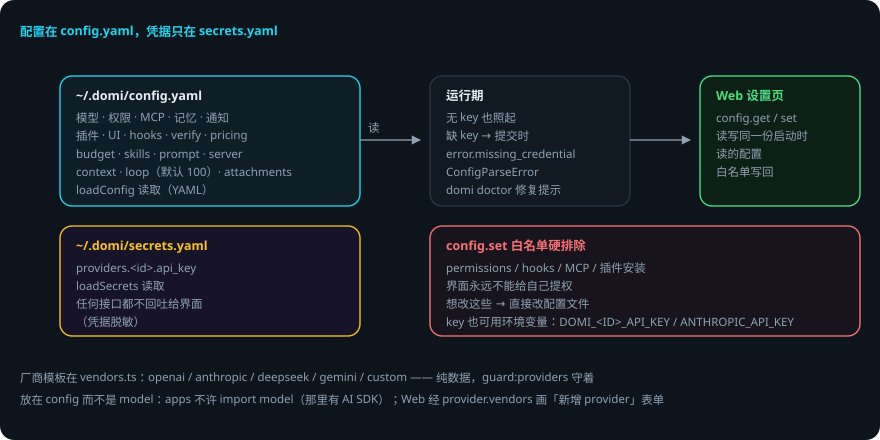

DOMI · DOCS
配置与厂商
本页回答四个问题：配置放哪？厂商知识在哪？什么能通过设置页改？改坏了会怎样？
packages/config—— 配置 schema、加载、secrets、厂商模板。 贯穿例子：给登录接口加限流——你在config.yaml里把loop.maxToolCalls调大。
先说结论
- 配置在
~/.domi/config.yaml，凭据只在~/.domi/secrets.yaml——两份文件，一个原则。 - 「有哪些厂商」这件知识只在
vendors.ts（guard:providers守着）：5 家模板，纯数据。 - 缺 key 也照起：模型请求留到提交时报
error.missing_credential。 - 凭据任何接口都不回吐给界面。
config.set白名单排除 permissions / hooks / MCP / 插件安装——界面永远不能给自己提权。- Web 设置页读写的就是启动时读的那一份。
用到的词
| 词 | 意思 |
|---|---|
| config.yaml | 主配置（模型 / 权限 / MCP / 记忆 / 上限）。 |
| secrets.yaml | 凭据文件（providers.<id>.api_key）。 |
| 厂商模板 | 纯数据的厂商知识（协议 / 地址 / 能力 / 适配器）。 |
| 白名单 | config.set 允许改的键的名单。 |
1. 两份文件，一个原则

~/.domi/config.yaml：模型、权限、MCP、记忆、通知、插件、UI、TUI、hooks、verify、pricing、budget、skills、prompt、server、context、loop、attachments。loadConfig读取（YAML）。~/.domi/secrets.yaml：凭据（providers.<id>.api_key）。loadSecrets读取；任何接口都不回吐给界面（凭据脱敏）。
key 也可以用各家惯用的环境变量（DOMI_<ID>_API_KEY + 厂商模板里的惯用名，如 ANTHROPIC_API_KEY）。
2. 厂商模板（vendors.ts）
「有哪些厂商」这件知识只在这里（guard:providers 守着）。每个模板是纯数据：{ id, label, protocol, adapter, defaultBaseUrl?, capabilities, envNames, keyHint }。
| 厂商 | 适配器 | 说明 |
|---|---|---|
| openai | openai-official | Responses API |
| anthropic | anthropic | 官方 |
| deepseek | openai-compatible | 兼容协议 |
| gemini | 官方 | |
| custom | 自选协议 | 后面挂什么只有用户知道 |
PROTOCOLS：openai|anthropic；Adapter：openai-official|anthropic|openai-compatible。- 能力矩阵（toolCall / vision / reasoning / promptCache / structuredOutput）是默认值——配置里可显式覆盖。
- 放在 config 而不是 model：apps 不许 import model（那里有 AI SDK），而模板本身不需要 SDK；Web 经
provider.vendors画「新增 provider」表单——两边都不自己写厂商名单。
3. 配置 schema 要点（zod）
| 区 | 要点 |
|---|---|
model |
默认模型 = 一个 provider + 一个模型名 |
providers |
每家一段（vendor / protocol / base_url / models / enabled / capabilities 覆盖） |
permissions.rules |
见工具与权限运行时 |
mcp |
servers / allowedHosts / timeoutMs，见MCP 接入 |
memory / notify / plugins |
enabled / allowUnsandboxed / disabled |
ui.locale |
auto | zh | en |
tui.renderer |
fullscreen | classic |
hooks / verify |
钩子 / 校验 |
pricing |
内置定价表；用量成本只统计有定价表的模型 |
budget |
预算 |
skills.enabled |
技能开关 |
prompt |
自定义提示词层 |
server |
port / host / token |
context |
上下文 |
loop |
上限，默认 100 |
attachments.maxMB |
默认 20 |
4. 加载与写回
load.ts：loadConfig（无 key 也照起；缺 key 留到提交时报error.missing_credential，data.reason = MISSING_CREDENTIAL）、configPath/domiHome、ConfigParseError。preflight.ts：domi doctor的每一条问题带一条能直接粘贴的修复命令。write.ts：writeConfigPatch——Web 设置页读写的就是启动时读的那一份；config.set的白名单必须排除 permissions / hooks / MCP / 插件安装——界面永远不能给自己提权。providers.ts：providerConnection/listProviders/credentialEnvNames/pricingOf。
5. 出错了怎么办：把 YAML 写坏了
- YAML 解析失败。
loadConfig抛ConfigParseError。打开配置看报错行，修 YAML。domi doctor会给修复提示。 - 缺 API key。domi 照常启动；模型请求提交时报
error.missing_credential（data.reason = MISSING_CREDENTIAL）。在 secrets.yaml 或环境变量里补 key。 - 设置页改了不被允许的键。白名单拒绝——permissions / hooks / MCP / 插件安装不能经界面改。改配置文件。
- 厂商能力声明错了。配置里显式覆盖 capabilities 即可。
- 不小心删了配置。domi 用默认值启动；
domi init重新生成模板。
一张表看全部情况
| 情况 | domi 做什么 | 你要做什么 |
|---|---|---|
| YAML 写坏 | ConfigParseError | 修 YAML / domi doctor |
| 缺 API key | 照起，提交时报 missing_credential | 补 secrets / 环境变量 |
| 设置页改敏感键 | 白名单拒绝 | 改配置文件 |
| 能力声明错 | 按声明拒绝/放行 | 显式覆盖 capabilities |
| 配置被删 | 默认值启动 | domi init 重建模板 |
6. 可靠性靠什么
- 职责分离：配置与凭据分文件，凭据不回吐。
- 知识单点：厂商名单只在 vendors.ts，两边共用不重复写。
- 缺 key 不崩：启动不依赖凭据，错误留到真正需要时。
- 界面不能提权：config.set 白名单硬排除敏感区。
- 写回一致：设置页读写同一份启动时读的配置。
已知限制
- YAML 是唯一格式（TOML 支持已删除）。
- 用量成本只统计有定价表的模型（BUILTIN_PRICING 之外不统计）。
- 厂商能力默认值是猜测：custom 的实际能力要靠显式覆盖。
- 白名单保护的是界面路径，直接改文件仍然可能写坏。
代码在哪里
| 主题 | 位置 |
|---|---|
| schema（zod） | packages/config/src/schema.ts |
| 加载 / 路径 | packages/config/src/load.ts |
| 写回 / 白名单 | packages/config/src/write.ts |
| 厂商模板 | packages/config/src/vendors.ts |
| doctor 问题源 | packages/config/src/preflight.ts |
| provider 连接 | packages/config/src/providers.ts |
测试：packages/config/test/（schema 校验、secrets 加载、vendor 解析、白名单）。
相关
- 模型层怎么消费厂商模板：模型运行时。
- 设置页 RPC：
config.get/config.set/provider.vendors见 Domi Protocol。 - 命令行看配置：
domi doctor/domi init见 CLI 与命令。